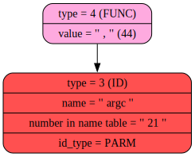
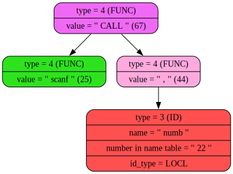

Token number 7: token type = 3, token_value = '' (22), str = 'loh)
lesssgo

lethim'
<pre>
<body style="background-color: #AFEEEE"><hr> <h2>FRESH NODE IS REEEEAAADYYYYYY:
</h2> <br> <hr>



Im IN GetP
CURRENT TOKEN TYPE = 1, VALUE = '' (25)<pre>
<body style="background-color: #AFEEEE"><hr> <h2>BEFORE 'WHILE' IN GetExpression >>> LEFT NODE:</h2> <br> <hr>


Token number 14: token type = 2, token_value = ';' (59), str = 'shutup
lethimcook du'

Im IN GetP
CURRENT TOKEN TYPE = 1, VALUE = '
' (10)<pre>
<body style="background-color: #AFEEEE"><hr> <h2>BEFORE 'WHILE' IN GetExpression >>> LEFT NODE:</h2> <br> <hr>


Token number 19: token type = 2, token_value = ';' (59), str = 'shutup

bro is eval '
<pre>
<body style="background-color: #AFEEEE"><hr> <h2>BEFORE 'WHILE' IN GetExpression >>> LEFT NODE:</h2> <br> <hr>


Im IN GetP
CURRENT TOKEN TYPE = 2, VALUE = ';' (59)<pre>
<body style="background-color: #AFEEEE"><hr> <h2>BEFORE 'WHILE' IN GetExpression >>> LEFT NODE:</h2> <br> <hr>


Token number 26: token type = 2, token_value = ';' (59), str = 'shutup

bro is bro s'
<pre>
<body style="background-color: #AFEEEE"><hr> <h2>BEFORE 'WHILE' IN GetExpression >>> LEFT NODE:</h2> <br> <hr>



Token number 30: token type = 2, token_value = ';' (59), str = 'shutup

stoopit

let'
<pre>
<body style="background-color: #AFEEEE"><hr> <h2>FRESH NODE IS REEEEAAADYYYYYY:
</h2> <br> <hr>


Im IN GetP
CURRENT TOKEN TYPE = 1, VALUE = '	' (9)<pre>
<body style="background-color: #AFEEEE"><hr> <h2>BEFORE 'WHILE' IN GetExpression >>> LEFT NODE:</h2> <br> <hr>


Token number 42: token type = 2, token_value = ';' (59), str = 'shutup

stoopit
$
'
<pre>
<body style="background-color: #AFEEEE"><hr> <h2>TEST OF PROGRAMM</h2> <br> <hr>


